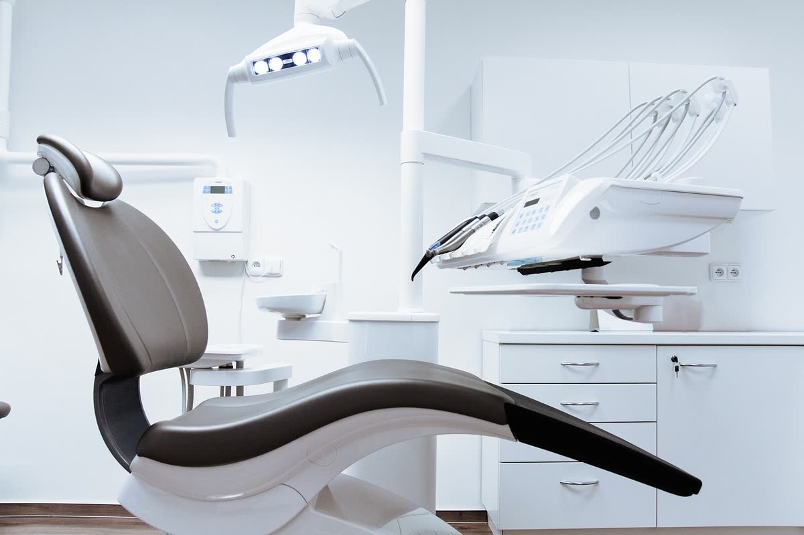
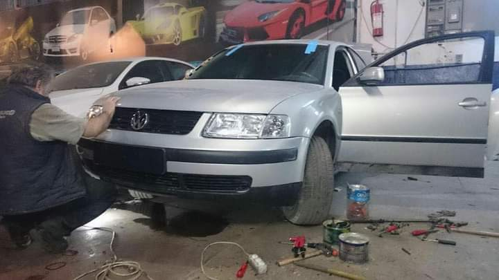
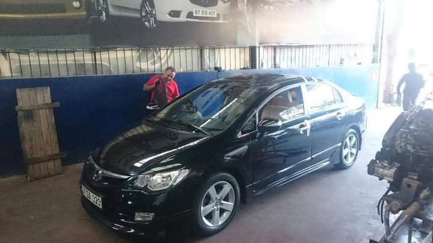
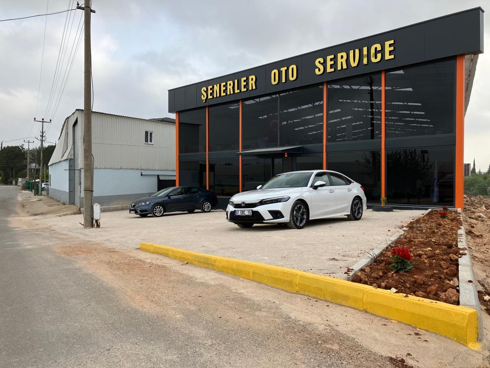
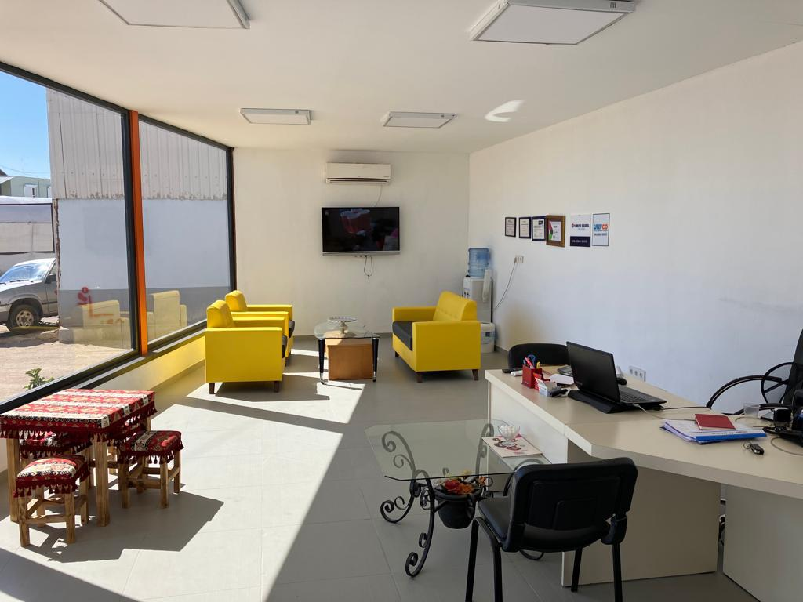

Antalya'da kaza onarımında özen, bakımda şeffaflık
Şenerler Oto Servis, Altınova Düden'de kaza onarımı ve araç bakımı hizmeti verir. Aracınızla tek tek ilgilenir, yapılan işlemleri açık şekilde anlatırız.
★★★★★ 4.8 · 80 Google yorumu



Şenerler Oto Servis, Altınova Düden'de kaza onarımı ve araç bakımı hizmeti verir. Aracınızla tek tek ilgilenir, yapılan işlemleri açık şekilde anlatırız.

Selfie yükleyin, dişlerinizi çerçeveleyin, kaydırın. Fotoğrafınız telefonunuzdan çıkmaz.
Önce fotoğrafınızı yükleyin.
Simülasyon fikir vermek içindir; gerçek sonuç muayene ve dijital gülüş tasarımı (DSD) ile planlanır.
Tedavilerinizi seçin: tahmini fiyat aralığı, Antalya'da kalmanız gereken gün ve gün gün planınız anında çıksın.
Önden veya yandan darbe almış araçların hasar tespiti ve onarımı titizlikle yapılır.
Hasar gören şasi ve direk bölgeleri düzeltilerek aracın yapısı yeniden toparlanır.
Kaporta onarımı ve boya işlemleriyle aracın görünümü yeniden düzenlenir.
Sigorta şirketi yönlendirmesiyle gelen araçların onarımı da yapılır.
Düzenli bakımla aracınızın sağlıklı çalışmasına destek olunur.
Aracınızdaki sorunlar incelenir, yapılacak işlemler önceden sizinle paylaşılır.




Önden kazalı araçlarda direk ve şasi düzeltmeleri özenle yapılır; müşterilerimiz aracı ilk günkü gibi teslim aldıklarını anlatıyor.
Onarım sürecinde ustabaşı da aracınızla bizzat ilgilenir, her bölüme ayrı ayrı dikkat edilir.
Bakım ve onarım işlemleri gereksiz uzatılmadan, ne yapıldığı anlatılarak tamamlanır.
Personelin ilgisi ve teknik bilgisi, Antalya'da güvenilir servis arayanlar için öne çıkan nedenlerimizden biridir.
📍 Altınova Düden, PTT Cd. No:416, 07170 Kepez/Antalya
🕑 Pzt–Cum 08:30–18:00 · Cmt 08:30–16:00 · Paz kapalı